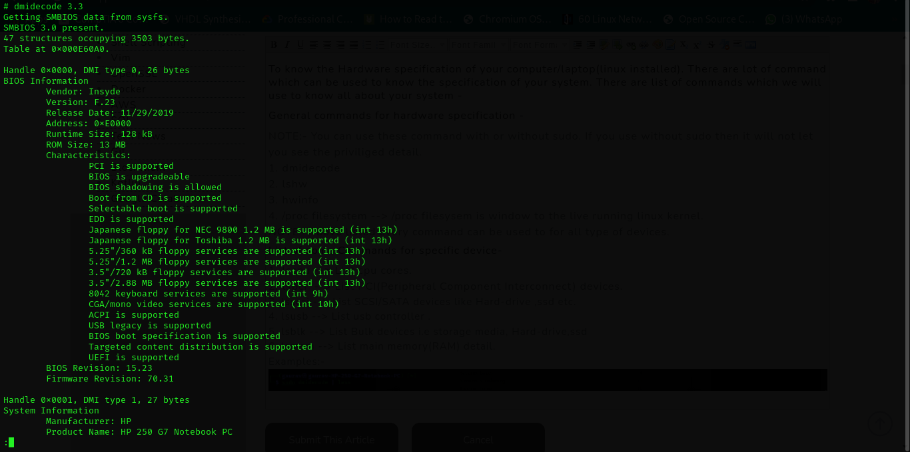
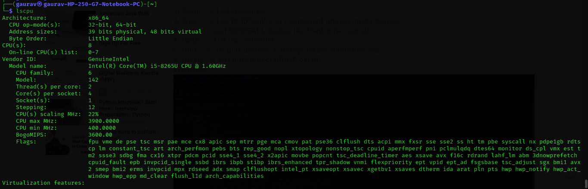

Blogs By Gaurav The Great
How to know the hardware specification with the help of terminal in linux
To know the Hardware specification of your computer/laptop(linux installed). There are lot of
command which can be used to know the specification of your system. There are list of commands
which we will use to know all about your system.
General commands for hardware specification -
NOTE:- You can use these command with or without sudo. If you use without sudo then it will not
let you see the priviliged detail.
1. dmidecode
2. lshw
3. hwinfo
4. /proc filesystem --> /proc filesysem is window to the live running linux kernel.
NOTE- Above listed every command can be used to for all type of devices.
List of some Commands for specific device-
1. lscpu --> List cpu cores.
2. lspci --> List PCI(Peripheral Component Interconnect) devices.
3. lsscsi --> List SCSI/SATA devices like Hard-drive ,ssd etc.
4. lsusb --> List usb controller .
5. lsblk --> List Bulk devices i.e storage media, Hard-drive,ssd
6. lsmem --> List main mem
Examples:-


Thanks for reading